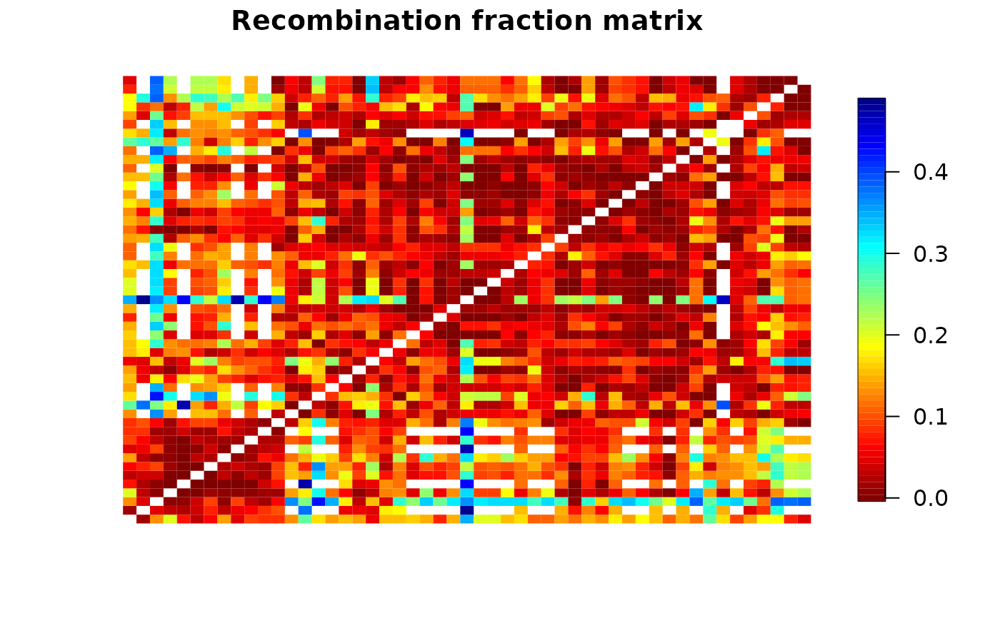

Performs the two-point pairwise analysis between all markers in a sequence. For each pair, the function estimates the recombination fraction for all possible linkage phase configurations and associated LOD Scores.
est_pairwise_rf2(
input.seq,
ncpus = 1L,
mrk.pairs = NULL,
verbose = TRUE,
tol = .Machine$double.eps^0.25
)an object of class mappoly.sequence
Number of parallel processes (cores) to spawn (default = 1)
a matrix of dimensions 2*N, containing N
pairs of markers to be analyzed. If NULL (default), all pairs are
considered
If TRUE (default), current progress is shown; if
FALSE, no output is produced
the desired accuracy. See optimize() for details
An object of class mappoly.twopt2
Differently from est_pairwise_rf this function returns only the values associated to the best linkage phase configuration.
Mollinari, M., and Garcia, A. A. F. (2019) Linkage analysis and haplotype phasing in experimental autopolyploid populations with high ploidy level using hidden Markov models, _G3: Genes, Genomes, Genetics_. doi:10.1534/g3.119.400378
## Tetraploid example
all.mrk <- make_seq_mappoly(tetra.solcap, 100:200)
all.pairs <- est_pairwise_rf2(input.seq = all.mrk, ncpus = 2)
#> Going RcppParallel mode.
#> ...
#> Done with pairwise computation.
#> ~~~~~~~
#> Reorganizing results
#> ...
m <- rf_list_to_matrix(all.pairs)
plot(m, fact = 2)
